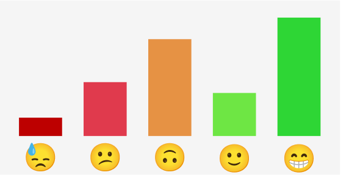

2022-02
# Atenciones
12
Satisfacción Promedio
General
# Atenciones
94
Satisfacción Promedio
Satisfacción de estudiantes (Semestral)
Satisfacción de estudiantes (All Time)

Desliza para cargar más resultados